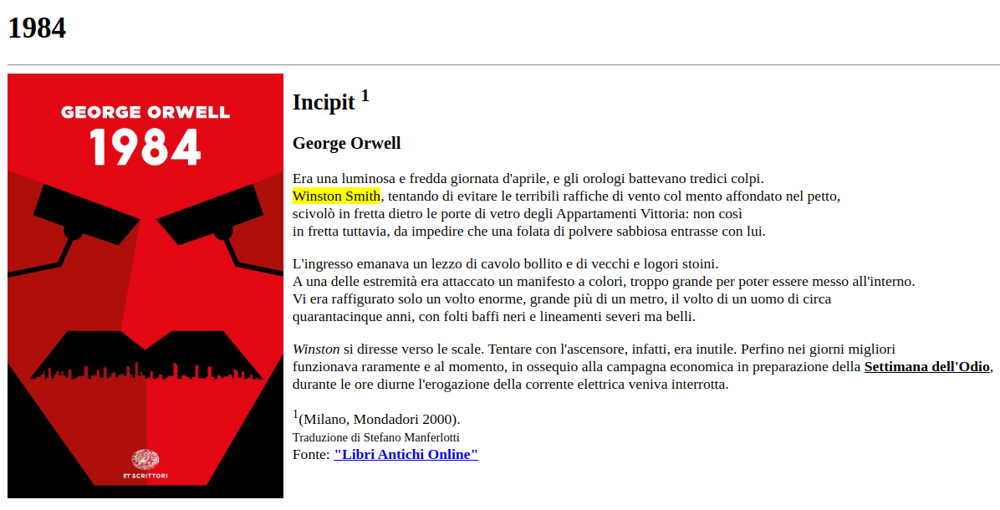

Appunti di laboratorio - elenco completo Contatto maurizio.boscaini@unitn.it
NOTA: questi appunti sono da intendersi solo come aiuto allo studio e alla preparazione all'esame.
La programmazione è difficile...ma è anche bella, utile e importante.
Si può imparare a programmare solo programmando.
Il browser ignora i tag non riconosciuti (nell'esercizio il tag <invenzione>), quindi che non sono tag HTML validi.
<!DOCTYPE html>
<html lang="en">
<head>
<title>Unitn - Page Title</title>
</head>
<body>
<h1>This is a Heading</h1>
<hr>
<p title="I'm a tooltip">This is a paragraph.</p>
<invenzione lang="it">Testo inventato</invenzione>
</body>
</html>
Tre livelli di un documento:
È simile al principio base del problem solving della scomposizione di un problema in sottoproblemi più semplici da risolvere.
Si tratta di un'applicazione del motto divide et impera.
I font si distinguono in:
Tra i sistemi di misura per la grandezza dei font, troviamo:
Crea una pagina web (1984a/index.html) con l'incipit del libro 1984 di George Orwell. Marca opportunamente alcune parti del contenuto, applicando i seguenti tag all'interno del tag <body>:
Inoltre:
Nella sezione Codice della lezione l'esercizio svolto da Elisabetta Rovere che fornisce il seguente output: 